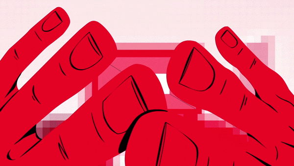
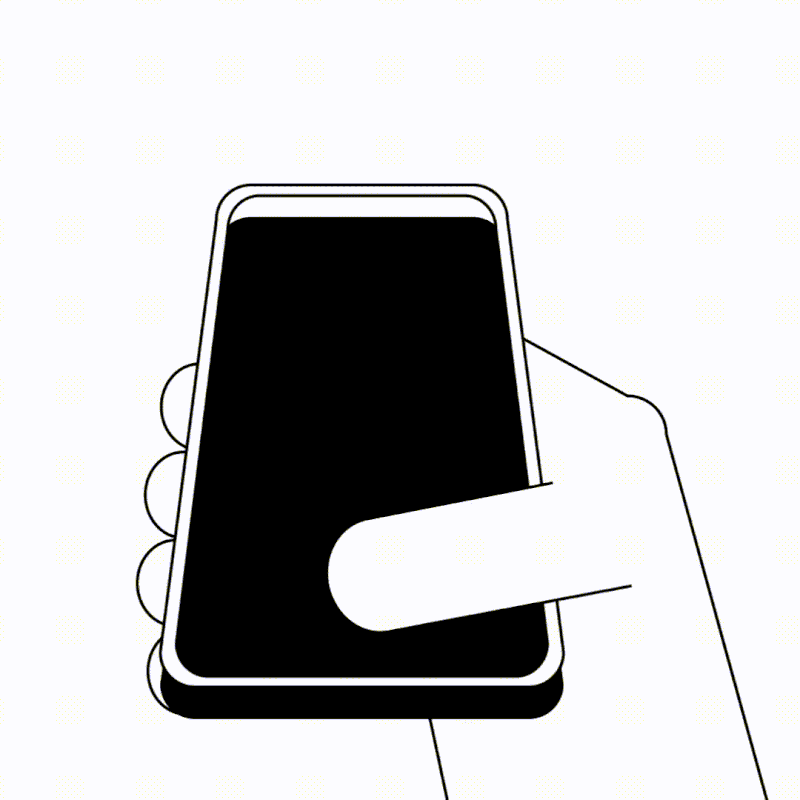

Reddit Monitoring
Surface active problem discussions, tool comparison rants, and product recommendations across relevant subreddits in real time.
Reddit, Bluesky, and X monitored in one place, with intent scoring and helpful replies ready for review.
Context attached, intent explained,
and every reply reviewable
Capture organic buyer demand across the three most active public social discussions on the internet.
Surface active problem discussions, tool comparison rants, and product recommendations across relevant subreddits in real time.
Track live founder conversations, competitor complaints, and immediate purchase requests across X before anyone else reaches them.

Monitor the fast-growing developer, tech founder, and early-adopter conversations on the decentralized network with custom keyword rules.

Most brands don't need more content. They need a better system.
More than social media management. A system designed to generate consistent business growth.
Reach the right audience with content and campaigns that attract people who are ready to buy.
Build trust through consistent messaging, professional creative, and a recognizable online presence.
Stop manual subreddit lurking. BuyerWatch continuously monitors keywords, competitors, and pain points 24/7.
Every conversation joined before it cools down compounds your presence and builds a steady stream of qualified traffic.
Track which threads convert. Measure verified referral clicks, reply outcomes, and intent scores with full visibility.
Every signal starts with real buyer intent and ends with verified pipeline. Here's what modern teams achieve.
Average ROI from social buyer signals — B2B SaaS & DevTools
$165 → $58 CAC vs paid ads & cold outreach


Track the communities, keywords, competitors, and buying language that matter to your business.
Speed wins deals. BuyerWatch's confidence-gated auto-send delivers helpful, context-grounded replies in seconds while strict safeguards protect your brand.

Engage buyers before competitors even notice the thread, capturing peak purchase intent while questions are fresh.
Only threads with unambiguous buying intent, verified context, and exact persona criteria trigger automated sending.

Strict cooldowns, daily caps, persona matching, and instant manual override keep every single reply authentic.
From signal rules to delivery, every stage stays visible, reviewable, and controlled.
Monitor configured competitor names, pain points, and buying phrases across Reddit and Bluesky.
Shape replies with your product profile, writing style, tone examples, and the live thread.
Review and edit drafts before sending, with guarded automation available only to eligible opted-in accounts.
Receive optional email summaries of newly qualified opportunities, organized by intent score.
Connect sent replies with recorded clicks, conversion events, and reported revenue.
Use personal review history and community evidence before eligible automation can send.
Let BuyerWatch scan social signals automatically. From high-intent mentions to competitor alternative requests, leads move forward without bottlenecks.
Skip manual filtering chaos. BuyerWatch AI rates lead intent score (0-100), extracts buyer budget signals, and drafts contextual replies in seconds.
Simplify repetitive sales work. BuyerWatch handles background thread monitoring, continuous post scoring, and Slack alerts so your team stays focused on closing.
A weekly operating rhythm, not a quarterly report.

Years spending and scaling media across every cycle and platform shift.
Full-funnel audit of media, creative, and tracking. We find where growth is leaking before spending a dollar.
We analyze your media, creative, and tracking to uncover what's working, where growth is being lost.
Winners get budget, losers get killed. The learning loop tightens every single week, driving better results.
Monitor the places your buyers already talk and surface the conversations that show credible buying intent.


Starter
For getting signal live
Card required · 7-day free trial · Then $19 for the first month, then $39/month
Start monitoring real buying signals with enough coverage to prove the workflow.
Start for $19WHAT'S INCLUDED
Professional
For active founders
Billed monthly
For founders actively working a social selling motion.
Upgrade to ProfessionalWHAT'S INCLUDED
Growth
For growing teams
Billed monthly
For teams that need higher limits and faster monitoring.
Upgrade to GrowthWHAT'S INCLUDED